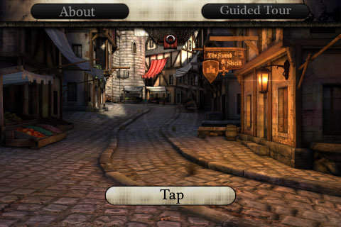
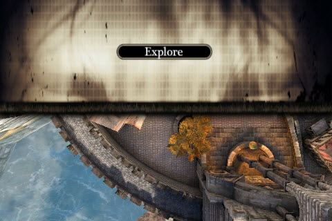

UDN
Search public documentation:
MobileMenuTechnicalGuideCH
English Translation
日本語訳
한국어
Interested in the Unreal Engine?
Visit the Unreal Technology site.
Looking for jobs and company info?
Check out the Epic games site.
Questions about support via UDN?
Contact the UDN Staff
日本語訳
한국어
Interested in the Unreal Engine?
Visit the Unreal Technology site.
Looking for jobs and company info?
Check out the Epic games site.
Questions about support via UDN?
Contact the UDN Staff
移动设备菜单技术指南
概述

尽管移动设备输入系统一般用于创建菜单，比如主菜单或暂停菜单，但是这些页面并不仅仅专用于没有游戏性发生时显示的菜单。当游戏性操作继续时它们可以叠加地显示在屏幕上，根据输入发生的位置及输入类型的不同这些菜单可以捕获输入事件或者传递输入事件。这使得移动设备菜单系统可以扩展标准输入区域控件来创建在屏幕上创建自定义控件，并且可以提供结构化的方式来创建抬头显示信息(HUD)。页面
MobileMenuScene(移动设备菜单页面)
MobileMenuScene 类是移动设备菜单系统中所有页面的基类。它定义了基本页面的行为；处理用户的输入，描画控件等。
MobileMenuScene属性
Display(显示)- SceneCaptionFont(页面标题字体) - 指出了描画页面上所有按钮的标题所使用的一个字体。
- Opacity(不透明度) - 页面及其所有控件的总体不透明度。
- MenuName(菜单名称) - 指出了一个唯一的名称，用于标识页面。
- MenuObjects(菜单对象) - 一个包含了页面的所有控件对象的数组。
- InputOwner(输入拥有者) - 一个到负责管理页面的
MobilePlayerInput引用。 - bSceneDoesNotRequireInput(页面是否不需要输入) - 如果为TRUE，页面将不接受触摸输入。否则，输入将会传递到该页面进行处理。默认为FALSE。设置这项为TRUE将会从本质上使页面变为抬头显示信息。
- Left(左侧) - 页面左侧边缘的水平位置，以像素为单位。*注意:* 这项可以在默认属性中将其指定为[0.0，1.0]范围内的相对位置，但是当初始化页面时将会把它转换为像素。
- Top(顶部) - 页面上边缘的垂直位置，以像素为单位。*注意:* 这项可以在默认属性中将其指定为[0.0，1.0]范围内的相对位置，但是当初始化页面时将会把它转换为像素。
- Width(宽度) - 页面的宽度。*注意:* 这项可以在默认属性中将其指定为[0.0，1.0]范围内的相对位置，但是当初始化页面时将会把它转换为像素。
- Height(高度) - 页面的高度。*注意:* 这项可以在默认属性中将其指定为[0.0，1.0]范围内的相对位置，但是当初始化页面时将会把它转换为像素。
- bRelativeLeft - 如果该项为TRUE，那么在默认属性中指定的
Left值将会作为[0.0, 1.0]范围内的相对值，当初始化页面时会将其转换为绝对像素值。 - bRelativeTop - 如果该项为TRUE，那么在默认属性中指定的
Top值将会作为[0.0, 1.0]范围内的相对值处理，当初始化页面时会将其转换为绝对像素值。 - bRelativeWidth - 如果该项为TRUE，那么在默认属性中指定的
Width值将会作为[0.0, 1.0]范围内的相对值处理，当初始化页面时会将其转换为绝对像素值。 - bRelativeHeight - 如果该项为TRUE，那么在默认属性中指定的
Height值将会作为[0.0, 1.0]范围内的相对值处理，当初始化页面时会将其转换为绝对像素值。 - bApplyGlobalScaleLeft - 如果该项为TRUE,
Left值将会在X方向上乘以全局缩放因数。这使得当目标平台是具有不同屏幕分辨率和像素密度的多个平台时可以正确地设置菜单位置。 - bApplyGlobalScaleTop - 如果该项为TRUE, 那么
Top值将会在Y方向上乘以全局缩放因数。这使得当目标平台是具有不同屏幕分辨率和像素密度的多个平台时可以正确地设置菜单位置。 - bApplyGlobalScaleWidth -如果该项为TRUE, 那么
Width值将会在X方向上乘以全局缩放因数。这使得当目标平台是具有不同屏幕分辨率和像素密度的多个平台时可以正确地设置菜单位置。 - bApplyGlobalScaleHeight - 如果该项为TRUE, 那么
Height值将会在Y方向上乘以全局缩放因数。这使得当目标平台是具有不同屏幕分辨率和像素密度的多个平台时可以正确地设置菜单位置。
- UITouchSound - 引用一个SoundCue，当触摸事件发生时播放该声效。
- UIUnTouchSound - 引用一个SoundCue，当取消触摸事件发生时播放该声效。
MobileMenuScene函数
Display(显示)- GetGlobalScale[X/Y] - 根据游戏所运行的设备的不同返回水平或垂直的全局缩放比例因数。
- RenderScene [Canvas] [RenderDelta] -
InputOwner调用该函数来渲染页面。简单地在属于该页面的所有控件上调用RenderObject()函数。- Canvas - 引用用于描画页面的
Canvas(画布)。 - RenderDelta - 存放了自从上一次渲染虚幻所过去的时间量。
- Canvas - 引用用于描画页面的
- InitMenuScene [PlayerInput] [ScreenWidth] [ScreenHeight] - 引擎调用该函数来初始化页面及其控件。
- PlayerInput - 引用负责管理页面的
MobilePlayerInput。 - ScreenWidth - 存放了游戏所在运行设备的屏幕宽度。
- ScreenHeight - 存放了游戏所在运行设备的屏幕高度。
- PlayerInput - 引用负责管理页面的
- Opened [Mode] - 当页面已经打开时调用该函数。
- Mode -存放了传入到
MobilePlayerInput中的OpenMenuScene()函数的可选字符串。
- Mode -存放了传入到
- MadeTopMenu - 当页面变为栈中最顶层的页面时，正在被打开的页面或者正在被关闭的页面调用该函数。
- Closing - 当要求关闭页面时调用该函数，但是该函数调用发生在关闭页面处理之前。如果返回TRUE则允许关闭页面。如果返回FALSE则覆盖关闭页面并仍然打开它。
- Closed - 当页面已经关闭并且从
Inputowner的页面栈中移除时调用该页面。 - CleanUpScene - Native(C++函数)。清除所有的页面引用和内存。
- FindMenuObject [Tag] - 从
MenuObjects数组中返回和给定的Tag匹配的控件。- Tag -要搜索的控件的
Tag（标签）。
- Tag -要搜索的控件的
- OnTouch [Sender] [TouchX] [TouchY] [bCancel] - 当页面的控件上发生一次触摸(在Untouch事件上)时调用该事件存根函数。子类应该重载这个函数来为控件触摸提供自定义的功能。
- Sender - 引用被触摸的
MobileMenuObject。 - TouchX - 存放了触摸的水平位置，以像素为单位。
- TouchY - 存放了触摸的垂直位置，以像素为单位。
- bCancel - 如果该项为TRUE, 那么触摸操作被外力取消，比如一个系统事件，或者一个不是来自用户的触摸事件。
- Sender - 引用被触摸的
- OnSceneTouch [EventType] [TouchX] [TouchY] - 当设备上发生任何触摸事件时引擎所调用的事件存根函数。如果输入已经被处理那么返回TRUE。否则，返回false，继续传递输入事件。子类应重载该函数来提供不必和页面的控件直接相关的自定义的触摸输入处理。
 重要注意事项: 目前仅当触摸发生在页面的边界范围外时调用该函数来使得页面处理外部触摸输入。
重要注意事项: 目前仅当触摸发生在页面的边界范围外时调用该函数来使得页面处理外部触摸输入。 - EventType - 存放EZoneTouchEvent类型的触摸事件。请参照移动设备输入系统页面查看关于触摸事件类型的更多信息。
- TouchX - 存放了触摸的水平位置，以像素为单位。
- TouchY - 存放了触摸的垂直位置，以像素为单位。
- MobileMenuCommand [Command] -执行一个exec或控制台命令。（目前还没有实现）。
- Command - 要执行的exec或控制台命令。
控件
MobileMenuObject
MobileMenuObject 类是移动设备菜单系统中的所有控件的子类。控件有两种状态，“已触摸”和“未触摸”，这些控件的每个状态有不同的外观 和/或 行为。默认的状态是 ‘未触摸’，直到用户触摸控件为止它将一直处于该状态。当触摸控件时，它将进入到‘触摸’状态，直到用户不在触摸它时它才会变为‘未触摸‘状态。
注意: 上面使用的术语“状态"不是指UnrealScript的State功能。它仅是简单地用于指出控件根据用户输入的不同可以具有不同的外观 和/或 行为。
MobileMenuObject 属性
Display(显示)- bIsHidden - 如果该项为TRUE，将不渲染该控件。
- bIsHighlighted -如果该项为TRUE，控件将会 '高亮显示', 比如选中一个单选按钮。
- Opacity - 控件的不透明度。
- bHasBeenInitialized - 如果该项为TRUE，那么控件已经被初始化为当前屏幕尺寸的大小。
- Tag - 指出了标识控件的唯一名称。
- OwnerScene - 引用该控件所属的
MobileMenuScene。
- TopLeeway - 指出了触摸发生在沿着控件顶部边缘的触摸框外多远处仍然认为是触摸到了控件。
- BottomLeeway -指出了触摸发生在沿着控件底部边缘的触摸框外多远处仍然认为是触摸到了控件。
- LeftLeeway - 指出了触摸发生在沿着控件左侧边缘的触摸框外多远处仍然认为是触摸到了控件。
- RightLeeway - 指出了触摸发生在沿着控件右侧边缘的触摸框外多远处仍然认为是触摸到了控件。
- bIsActive - 如果该项为TRUE，则认为该控件是激活的，并且可以接受点击。
- bIsTouched - 如果该项为TRUE，那么触摸事件当前正发生在控件上。
- InputOwner - 引用负责管理控件的
MobilePlayerInput。
- Left - 控件左侧边缘的水平位置，以像素为单位。*注意:* 这项可以在默认属性中将其指定为[0.0，1.0]范围内的相对位置，但是当初始化控件时将会把它转换为像素。
- Top(顶部) -控件上边缘的垂直位置，以像素为单位。*注意:* 这项可以在默认属性中将其指定为[0.0，1.0]范围内的相对位置，但是当初始化控件时将会把它转换为像素。
- Width(宽度) - 控件的宽度。*注意:* 这项可以在默认属性中将其指定为[0.0，1.0]范围内的相对位置，但是当初始化控件时将会把它转换为像素。
- Height(高度) - 控件的高度。*注意:* 这项可以在默认属性中将其指定为[0.0，1.0]范围内的相对位置，但是当初始化控件时将会把它转换为像素。
- bRelativeLeft - 如果该项为TRUE，那么在默认属性中指定的
Left值将会作为[0.0, 1.0]范围内的相对值，当初始化控件时会将其转换为绝对像素值。 - bRelativeTop - 如果该项为TRUE，那么在默认属性中指定的
Top值将会作为[0.0, 1.0]范围内的相对值，当初始化控件时会将其转换为绝对像素值。 - bRelativeWidth - 如果该项为TRUE，那么在默认属性中指定的
Width值将会作为[0.0, 1.0]范围内的相对值处理，当初始化控件时会将其转换为绝对像素值。 - bRelativeHeight - 如果该项为TRUE，那么在默认属性中指定的
Height值将会作为[0.0, 1.0]范围内的相对值处理，当初始化控件时会将其转换为绝对像素值。 - bApplyGlobalScaleLeft - 如果该项为TRUE,
Left值将会在X方向上乘以全局缩放因数。这使得当目标平台是具有不同屏幕分辨率和像素密度的多个平台时可以正确地设置菜单位置。 - bApplyGlobalScaleTop - 如果该项为TRUE, 那么
Top值将会在Y方向上乘以全局缩放因数。这使得当目标平台是具有不同屏幕分辨率和像素密度的多个平台时可以正确地设置菜单位置。 - bApplyGlobalScaleWidth -如果该项为TRUE, 那么
Width值将会在X方向上乘以全局缩放因数。这使得当目标平台是具有不同屏幕分辨率和像素密度的多个平台时可以正确地设置菜单位置。 - bApplyGlobalScaleHeight - 如果该项为TRUE, 那么
Height值将会在Y方向上乘以全局缩放因数。这使得当目标平台是具有不同屏幕分辨率和像素密度的多个平台时可以正确地设置菜单位置。 - bHeightRelativeToWidth - 如果该项为TRUE，那么当创建控件时在默认属性中指定的
Height将会被认为是到实际Width(宽度)的相对值(在[0.0, 1.0]范围内)。控件的实际Height(高度)通过使用实际Width(宽度)乘以指定Height(高度)来计算。 - XOffset - 指出了相对于控件边界的水平偏移量，当描画控件时可以使用该值。默认情况下，假设该值为[0.0, 1.0]范围内的一个百分比值。
- YOffset - 指出了相对于控件边界的水平偏移量，当描画控件时可以使用该值。默认情况下，假设该值为[0.0, 1.0]范围内的一个百分比值。
- bXOffsetIsActual -如果该项为TRUE,那么则假设
XOffsetValue是像素值。 - bYOffsetIsActual - 如果该项为TRUE,那么则假设
YOffsetValue是像素值。
MobileMenuObject 函数
- InitMenuObject [PlayerInput] [Scene] [ScreenWidth] [ScreenHeight] - 引擎调用该函数来初始化控件。
- PlayerInput - 引用负责管理控件的
MobilePlayerInput。 - OwnerScene - 引用该控件所属于的
MobileMenuScene。 - ScreenWidth - 存放了游戏所在运行设备的屏幕宽度。
- ScreenHeight - 存放了游戏所在运行设备的屏幕高度。
- PlayerInput - 引用负责管理控件的
- RenderObject [Canvas] - 由属于每帧的页面控件调用，以便描画控件到屏幕上。
- Canvas - 引用用于描画控件的
Canvas(画布)。
- Canvas - 引用用于描画控件的
MobileMenuButton
MobileMenuButton 类是一个可以显示 图像 和/或 文本的控件，当触摸该控件时会执行一些动作。默认情况下它是接收输入事件的唯一控件( bIsActive 为true)。当按钮上发生触摸事件(从技术上讲，‘未触摸‘事件上)时，拥有该控件的屏幕将接收到一个通知。当按钮处于’未触摸‘状态( bIsTouched=false )时 ,它将显示一个图像，当处于’触摸‘状态( bIsTouched=true )时将会显示另一个不同的图像。
 属性
属性
- Images - 一个数组，存放着用于渲染按钮的两个
Texture2Ds，一个贴图对应一个状态。元素[0]用于’未触摸‘状态，而元素[1]用于'触摸'状态。 - ImagesUVs - 一个数组，指出了描画按钮时所使用的两个
图像贴图区域范围的UVCoords，一个坐标对应一个状态。元素[0]用于’未触摸‘状态，而元素[1]用于'触摸'状态。 - ImageColor - 指出了调制按钮图像所使用的颜色。
- Caption - 指出了显示在按钮上的可选的文本标签。
- CaptionColor - 指出了描画
Caption文本所使用的颜色。
- RenderCaption [Canvas] - 如果指定了标题，该函数将描画按钮的
Caption文本。- Canvas - 引用用于描画文本的
Canvas(画布)。
- Canvas - 引用用于描画文本的
MobileMenuImage
MobileMenuImage 类在屏幕上显示一个图像，以一张贴图或者一张贴图一部分的形式。这个控件不接受输入事件，意味着将不会注册图像上的触摸事件并把它发送给页面的 OnTouch() 事件，实质上是使它变为一个装饰性的控件。
属性
- Image - 一个
Texture2D，用于指出描画图像时所使用的贴图。 - ImageDrawStyle - 指出了用于描画图像时所使用的
MenuImageDrawStyle。- IDS_Normal - 描画指定的未经过缩放和图像边界剪辑的贴图的区域范围。
- IDS_Stretched - 描画了指定的缩放贴图来填充图像边界的区域范围。
- IDS_Tile - 保持要描画的区域的左上角不变，但是修改区域的宽度和高度来匹配图像的边界。如果指定的区域大于图像的边界那么则剪辑图像，否则如果指定的区域小于图像边界那么则平铺图像(假设区域是完整的贴图)。*注意:* 当使用atlas贴图时，应该避免使用这个选项，因为它会导致意想不到的行为。
- ImageUVs - 一个=UVCoords= ，指出了当描画图像时所使用的
Image(图像)贴图的范围。 - ImageColor - 指出了当描画图像时所使用的调制
Image(图像)贴图的颜色。
MobileMenuLabel
MobileMenuLabel 类在屏幕上显示了一个文本字符串。这对于向用户显示自定义的或动态数据或文本是有用的。这个控件不接受输入事件，意味着将不会注册触摸事件并且不会将其发送给页面的 OnTouch() 事件。
属性
- Caption - 指出了显示在屏幕上的标签的文本字符串。
- TextFont - 指出了用于描画文本所使用的字体。
- TextColor - 指出了当没有触摸标签时描画文本所使用的颜色。
- TouchedColor - 指出了正在触摸标签时描画文本所使用的颜色。
- TextXScale - 指出了描画文本所使用的水平缩放因数。
- TextYScale - 指出了描画文本所使用的垂直缩放因数。
- bAutoSize - 如果该项为TRUE, 那么将会调整标签的
Width(宽度)和Height(高度)来适应每次描画循环所渲染的文本的大小。否则，标签的Width(宽度)和Height(高度)将不改变。
自定义控件
尽管仅有几个基本的内置控件(上面描述的按钮、图像及标签)，这些控件可以组合到一起来创建您经过一些创新可以想象到的任何类型的控件。比如，您可以有一组按钮，每个按钮有相应的标签，当触摸组中的任何一个按钮时，按钮会切换到’选中‘的图像而组中所有其他的按钮切换到’未选中‘图像。这将产生一组单选按钮的效果。 这种在页面中组合控件的方法可以产生更加复杂的控件外观，也需要在页面中嵌入更多的自定义逻辑。显然，如果您想重复使用这种复杂控件时这并不是理想的做法。假如那些控件不能直接处理或接收输入，创建更加复杂的可重复使用的控件类型需要对系统进行额外的修改。比如，有必要创建一个MobileMenuScene 类的子类，该类处理一般的输入，然后会把该输入事件传递给它的每个控件来进行处理。这使得自定义控件可以直接对触摸输入产生复杂的反应行为，比如列表基于’扫过动作‘进行滚动(请参照 自定义列表控件部分 )。
使用菜单页面
MobilePlayerInput 类负责管理菜单系统。触摸输入处理是在菜单本身中执行的，并且它足够地灵活几乎可以适合任何情境。
创建控件
添加控件到页面中一般是通过在页面类的defaultproperties(默认属性) 代码块中创建子对象来完成的。每个控件作为一个子对象创建，然后被添加到页面的 MenuObjects 数组中。在 defaultproperties 代码块中创建控件的顺序并不是非常重要，但是，把控件添加到 MenuObjects 数组的顺序是非常重要的，因为这决定了渲染控件和接受输入的顺序。
创建一个新的控件并将其添加到 MenuObjects 数组中的典型的子对象块如下所示：
Begin Object Class=MobileMenuButton Name=ExploreButton Tag="EXPLORE" Left=0.35 Top=0.35 Width=140 Height=24 bRelativeLeft=true bRelativeTop=true TopLeeway=20 Images(0)=Texture2D'CastleUI.menus.T_CastleMenu2' Images(1)=Texture2D'CastleUI.menus.T_CastleMenu2' ImagesUVs(0)=(bCustomCoords=true,U=306,V=220,UL=310,VL=48) ImagesUVs(1)=(bCustomCoords=true,U=306,V=271,UL=310,VL=48) End Object MenuObjects(0)=ExploreButton
MenuObjects 数组中的第一项元素(元素0)。通过这种方式显式地指出顺序使您可以按照您期望的方式在 defaultproperties 代码块中创建控件。
把同样的按钮也简单地放入到 MenuObjects 数组的尾部，如下所示：
Begin Object Class=MobileMenuButton Name=ExploreButton Tag="EXPLORE" Left=0.35 Top=0.35 Width=140 Height=24 bRelativeLeft=true bRelativeTop=true TopLeeway=20 Images(0)=Texture2D'CastleUI.menus.T_CastleMenu2' Images(1)=Texture2D'CastleUI.menus.T_CastleMenu2' ImagesUVs(0)=(bCustomCoords=true,U=306,V=220,UL=310,VL=48) ImagesUVs(1)=(bCustomCoords=true,U=306,V=271,UL=310,VL=48) End Object MenuObjects.Add(ExploreButton)
MenuObjects 数组的尾部，这是很重要的。
无论您使用哪种方法来实现，子对象代码块的语法仍然是一样的。每个代码块都以下面的语句块头：
Begin Object Class=[ControlClass] Name=[ControlName]
ControlName 创建一个新的 ControlClass 类型的子对象。后面跟随的代码为控件属性设置期望的值，这通常是出于保持良好格式及易于阅读的目的。最后，在设置完属性值后，使用以下语句结束：
End Object
defaultproperties 代码块中引用子对象，正如把该子对象分配到 MenuObjects 数组中所看到的那样。
具有一个背景图像和一个简单按钮但没有任何实际功能的简单页面如下所示：
class MobileMenuExample extends MobileMenuScene;
defaultproperties
{
Left=0
Top=0
Width=1.0
Height=180
bRelativeWidth=true
Begin Object Class=MobileMenuImage Name=Background
Tag="Background"
Left=0
Top=0
Width=1.0
Height=1.0
bRelativeWidth=true
bRelativeHeight=true
Image=Texture2D'CastleUI.menus.T_CastleMenu2'
ImageDrawStyle=IDS_Stretched
ImageUVs=(bCustomCoords=true,U=0,V=30,UL=1024,VL=180)
End Object
MenuObjects.Add(Background)
Begin Object Class=MobileMenuButton Name=ExploreButton
Tag="EXPLORE"
Left=0.35
Top=0.35
Width=140
Height=24
bRelativeLeft=true
bRelativeTop=true
TopLeeway=20
Images(0)=Texture2D'CastleUI.menus.T_CastleMenu2'
Images(1)=Texture2D'CastleUI.menus.T_CastleMenu2'
ImagesUVs(0)=(bCustomCoords=true,U=306,V=220,UL=310,VL=48)
ImagesUVs(1)=(bCustomCoords=true,U=306,V=271,UL=310,VL=48)
End Object
MenuObjects.Add(ExploreButton)
}

管理菜单
移动设备菜单系统是通过MobilePlayerInput 类进行管理的。它包含了用于打开页面、关闭页面及指示渲染和传递用户输入事件到页面及其控件上的功能。
页面栈
任何时候可以同时打开多个页面。所有的打开的页面都存放在MobilePlayerInput 的一个栈(一个数组)中。最后一个打开的页面总是位于栈的顶部。输入事件通过页面栈自顶向下进行过滤。如果一个栈顶部的页面处理那个输入事件，那么栈中较低部的控件将不会访问那个输入事件。栈中的页面是以自底向上的形式渲染的，所以顶部的页面将会渲染到所有其他页面上。
打开菜单页面
MobilePlayerInput 类包含了用于打开菜单页面的各种函数。
- OpenMenuScene [SceneClass] [Mode] - 打开给定类的新菜单页面。返回到打开的页面的引用。
- SceneClass - 指出了要打开的菜单页面的类。必须是
MobileMenuScene的子类。 - Mode - 可选的。指出了一个传入到页面的
Opened()函数的字符串。
- SceneClass - 指出了要打开的菜单页面的类。必须是
- OpenMobileMenu [MenuClassName] - 以字符串的形式打开给定类的菜单页面。
- MenuClassName - 以字符串的形式指定要打开的菜单页面的类的名称。
- OpenMobileMenuMode [MenuClassName] [Mode] - 以字符串的形式打开给定类的菜单页面，具有可选模式。
- MenuClassName - 以字符串的形式指定要打开的菜单页面的类的名称。
- Mode - 可选的。指出了一个传入到页面的
Opened()函数的字符串。
关闭菜单页面
MobilePlayerInput 类包含了两个用于关闭菜单页面的函数。
- CloseMenuScene [SceneToClose] - 关闭指定的菜单页面。
- SceneToClose - 引用要关闭的页面。
- CloseAllMenus - 关闭页面栈中所有的菜单页面。
渲染菜单页面
MobilePlayerInput 类也处理在每帧渲染页面栈中的哪个页面。
- RenderMenus [Canvas Canvas] [RenderDelta] - 每帧中引擎调用该函数来渲染页面栈中的所有菜单。
- Canvas - 引用用于描画页面的
Canvas(画布)。 - RenderDelta - 存放了自从上一次渲染虚幻所过去的时间量。
- Canvas - 引用用于描画页面的
触摸输入
当用户在页面范围内触摸屏幕时页面会从引擎接收触摸输入通知。页面可以使用这些通知来把触摸输入解释为动作。页面获得输入通知的方法主要有两种。控件触摸
当触摸一个激活的控件时，页面从控件接收一个通知(通过OnTouch() 事件)，从而允许页面以任何它认为合理的方式来处理触摸结果。仅当用户“未触摸”控件时调用这个事件，和释放按钮的操作类似，该操作和按下按钮相反。
- OnTouch [Sender] [TouchX] [TouchY] [bCancel] - 当页面的控件上发生一次触摸(在Untouch事件上)时调用该事件存根函数。子类应该重载这个函数来为控件触摸提供自定义的功能。
- Sender - 引用被触摸的
MobileMenuObject。 - TouchX - 存放了触摸的水平位置，以像素为单位。
- TouchY - 存放了触摸的垂直位置，以像素为单位。
- bCancel - 如果该项为TRUE, 那么触摸操作被外力取消，比如一个系统事件，或者一个不是来自用户的触摸事件。
- Sender - 引用被触摸的
基本按钮示例
我们以上面的‘创建控件’为例，创建一个从按钮获得输入并使用它执行一些动作的基本示例。
class MobileMenuExample extends MobileMenuScene;
defaultproperties
{
Left=0
Top=0
Width=1.0
Height=180
bRelativeWidth=true
Begin Object Class=MobileMenuImage Name=Background
Tag="Background"
Left=0
Top=0
Width=1.0
Height=1.0
bRelativeWidth=true
bRelativeHeight=true
Image=Texture2D'CastleUI.menus.T_CastleMenu2'
ImageDrawStyle=IDS_Stretched
ImageUVs=(bCustomCoords=true,U=0,V=30,UL=1024,VL=180)
End Object
MenuObjects.Add(Background)
Begin Object Class=MobileMenuButton Name=ExploreButton
Tag="EXPLORE"
Left=0.35
Top=0.35
Width=140
Height=24
bRelativeLeft=true
bRelativeTop=true
TopLeeway=20
Images(0)=Texture2D'CastleUI.menus.T_CastleMenu2'
Images(1)=Texture2D'CastleUI.menus.T_CastleMenu2'
ImagesUVs(0)=(bCustomCoords=true,U=306,V=220,UL=310,VL=48)
ImagesUVs(1)=(bCustomCoords=true,U=306,V=271,UL=310,VL=48)
End Object
MenuObjects.Add(ExploreButton)
}
OnTouch() 事件，添加功能来处理按钮押下事件。首先，添加函数签名(可以从 MobileMenuScene 类复制)：
function OnTouch(MobileMenuObject Sender,float TouchX, float TouchY, bool bCancel)
{
}
Sender 为空或者设置了 bCancel 参数时，函数应该返回不做任何处理。
if(Sender == none)
{
return;
}
if(bCancel)
{
return;
}
if(Sender.Tag ~= "EXPLORE")
{
InputOwner.CloseMenuScene(self);
}
Sender 的 Tag=(通过 =~= 操作符使用大小写敏感的判断)来确保它和在默认属性中为按钮指定的 Tag 是一样的。如果判断成功并且按钮是已触摸的控件，那么将会在 Inputowner 上调用 CloseMenuScene() 函数，该 Inputowner 是本地玩家的 MobilePlayerInput ，并向函数传递到菜单本身的引用 self 。
集成到页面类中的完整的 OnTouch() 函数是：
class MobileMenuExample extends MobileMenuScene;
function OnTouch(MobileMenuObject Sender,float TouchX, float TouchY, bool bCancel)
{
if(Sender == none)
{
return;
}
if(bCancel)
{
return;
}
if(Sender.Tag ~= "EXPLORE")
{
InputOwner.CloseMenuScene(self);
}
}
defaultproperties
{
Left=0
Top=0
Width=1.0
Height=180
bRelativeWidth=true
Begin Object Class=MobileMenuImage Name=Background
Tag="Background"
Left=0
Top=0
Width=1.0
Height=1.0
bRelativeWidth=true
bRelativeHeight=true
Image=Texture2D'CastleUI.menus.T_CastleMenu2'
ImageDrawStyle=IDS_Stretched
ImageUVs=(bCustomCoords=true,U=0,V=30,UL=1024,VL=180)
End Object
MenuObjects.Add(Background)
Begin Object Class=MobileMenuButton Name=ExploreButton
Tag="EXPLORE"
Left=0.35
Top=0.35
Width=140
Height=24
bRelativeLeft=true
bRelativeTop=true
TopLeeway=20
Images(0)=Texture2D'CastleUI.menus.T_CastleMenu2'
Images(1)=Texture2D'CastleUI.menus.T_CastleMenu2'
ImagesUVs(0)=(bCustomCoords=true,U=306,V=220,UL=310,VL=48)
ImagesUVs(1)=(bCustomCoords=true,U=306,V=271,UL=310,VL=48)
End Object
MenuObjects.Add(ExploreButton)
}
 触摸按钮
触摸按钮

菜单关闭
自定义触摸输入
OnSceneTouch 页面通过OnSceneTouch() 事件的方式获得所有触摸的通知。这使得页面不仅可以处理特定控件的触摸事件，而且也可以处理通用的输入来执行自定义类型的输入。
- OnSceneTouch [EventType] [TouchX] [TouchY] - 当事件发生在页面范围内时引擎调用的该事件存根函数。子类应重载该函数来提供不必和页面的控件直接相关的自定义的触摸输入处理。
- EventType - 存放
EZoneTouchEvent类型的触摸事件。请参照移动设备输入系统页面查看关于触摸事件类型的更多信息。 - TouchX - 存放了触摸的水平位置，以像素为单位。
- TouchY - 存放了触摸的垂直位置，以像素为单位。
- EventType - 存放